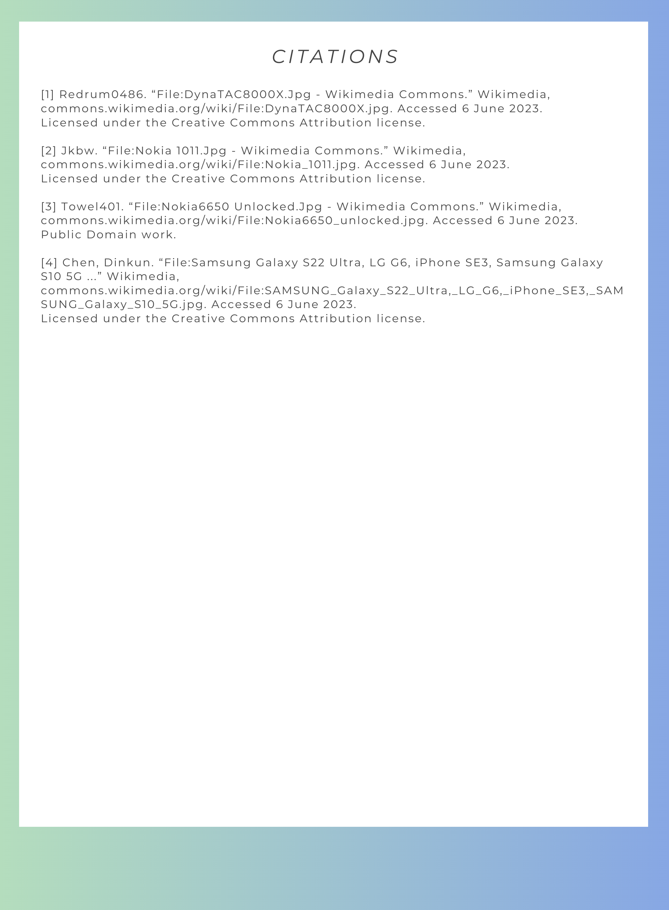
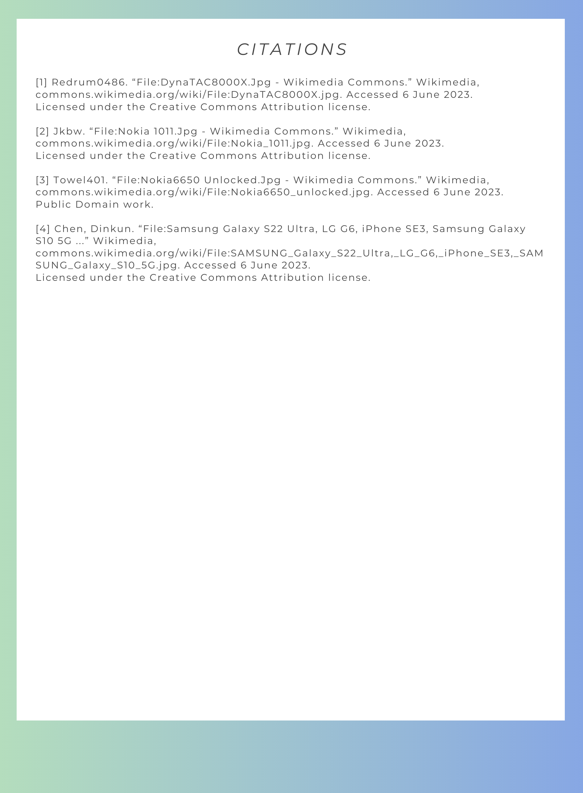
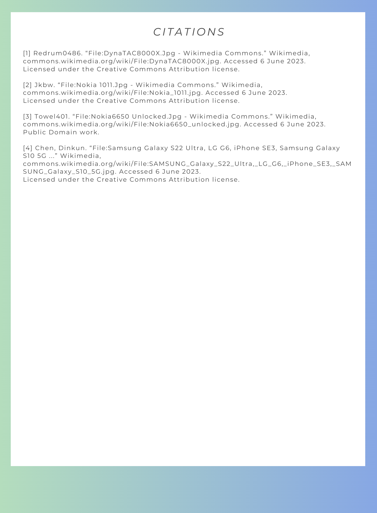

Hello, my name is Yeesa and this is for my DTC 101 class.
Below includes my major projects I had created for my class!
Data Project
Curation Project

Reflection
Design Thinking Project
Class Reflection
I think some of the most important information and observations I've made in this course include:
Being more mindful of the content I consume online. Data is not neutral and is always made with bias because it originates from humans. Everyone has their own beliefs and biases, therefore, our data can never be free from that.
Our data is important and valuable. Although it is difficult to protect our data, we should always be careful and mindful of what organizations we give our data to and how easy it is for others to find personal information about us.
While curation is a great tool that allows us to quickly consume information. We should be aware that curated articles and papers can often be skewed to fit the viewpoint and goals of the person or organization that wrote them. Articles are often written to mislead others in order to promote an agenda or make money, therefore, we should do our best to fact check articles and information we see online.
Copyright is important to help protect creators from being taken advantage of. However, due to the nature of copyright creations, it is difficult to recognize what should be copyrighted and what shouldn't.
We often get stuck on the narrative of "newer is better" or "older is better", however, we should instead reflect on what we can learn and improve on from both newer and older iterations. The narrative of which is better can often hinder our progress instead of allowing us to create better iterations.
Design is a multi-step process that includes coming up with an idea, multiple prototyping iterations and testing to figure out the best solution. These steps help us recognize and create the best design that most closely solves or lines up with our original idea.


 
